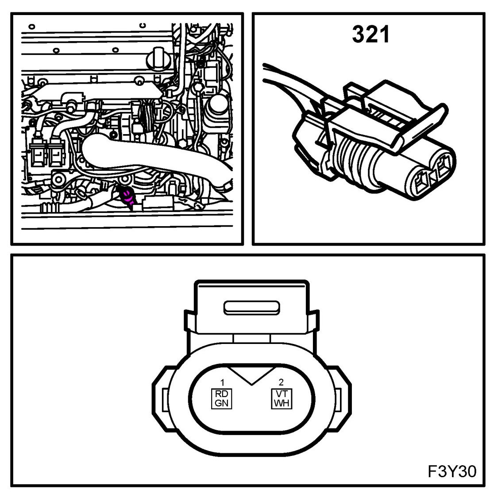
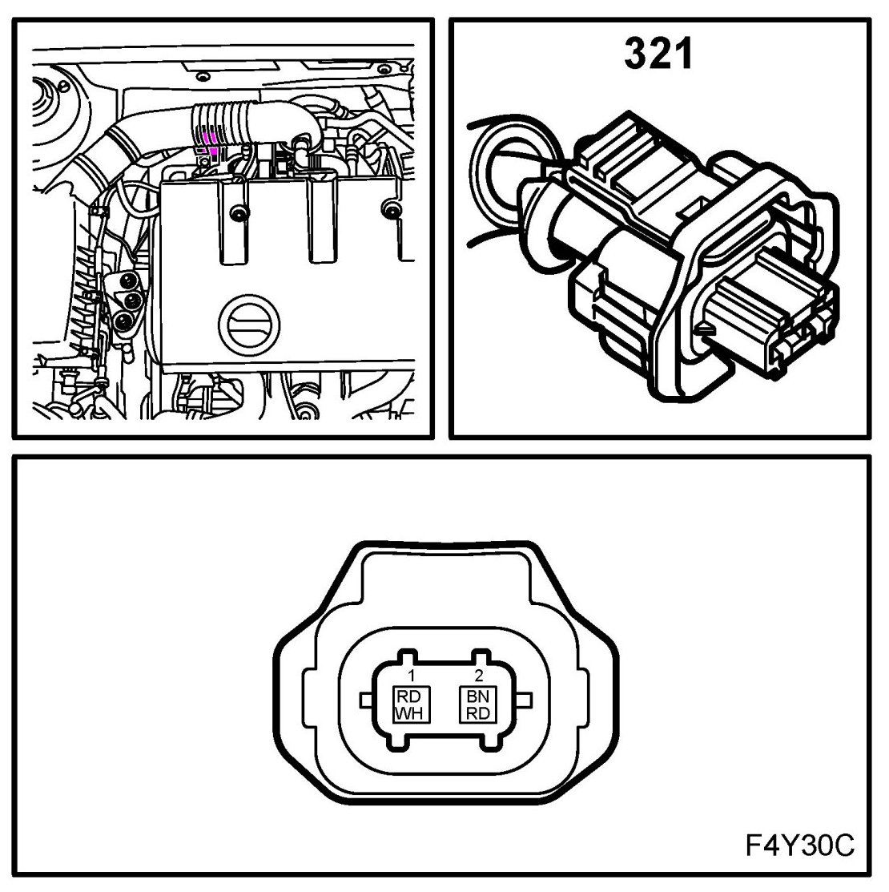
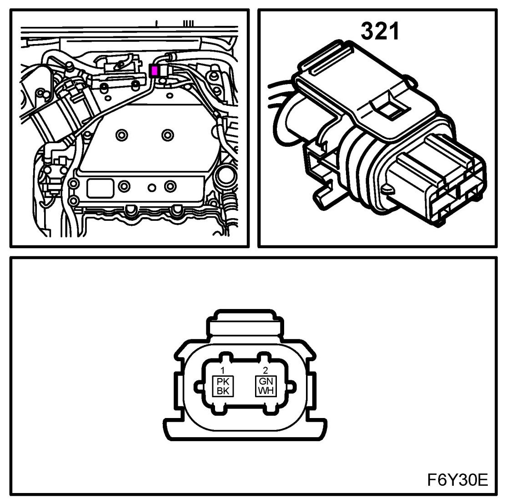

Canister Purge Control Valve: Locations
EVAP Canister Purge Valve (321)
Location:
B207
on hose to mass air flow sensor

Z18XE
above the generator

B284
on rear cylinder bank below connector H7-1



